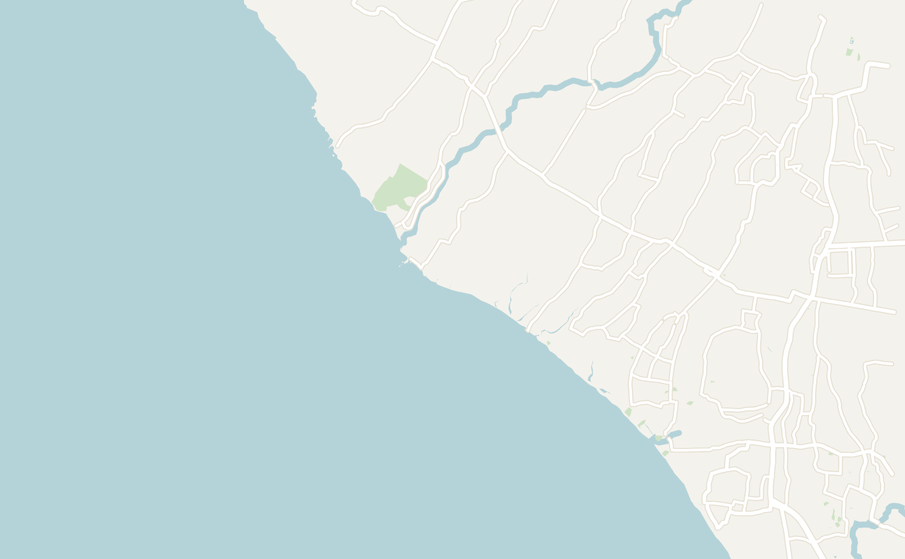
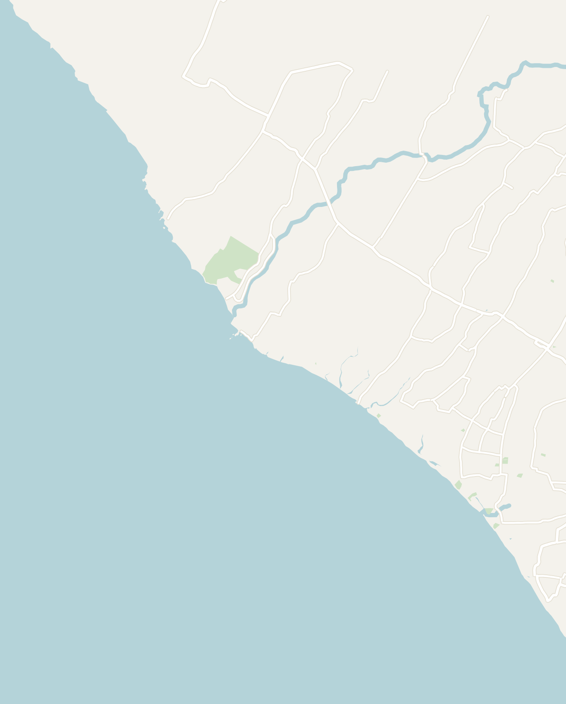
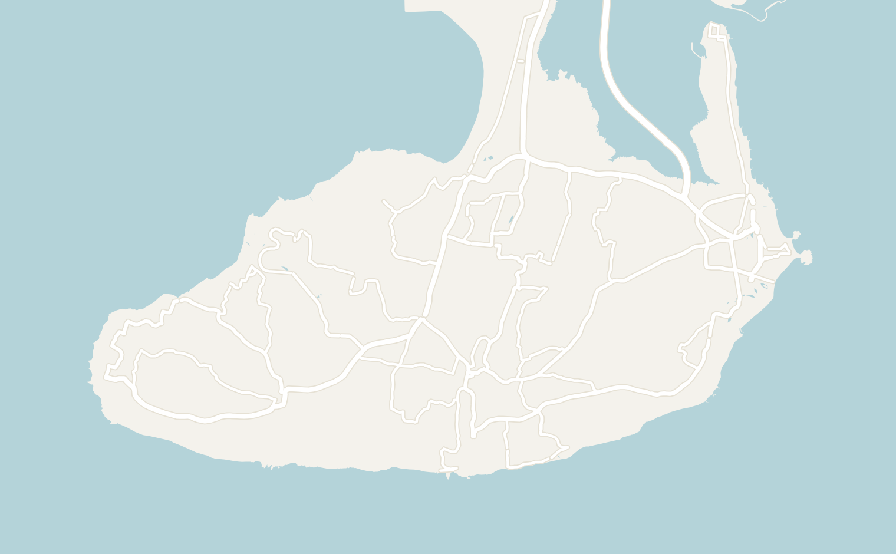
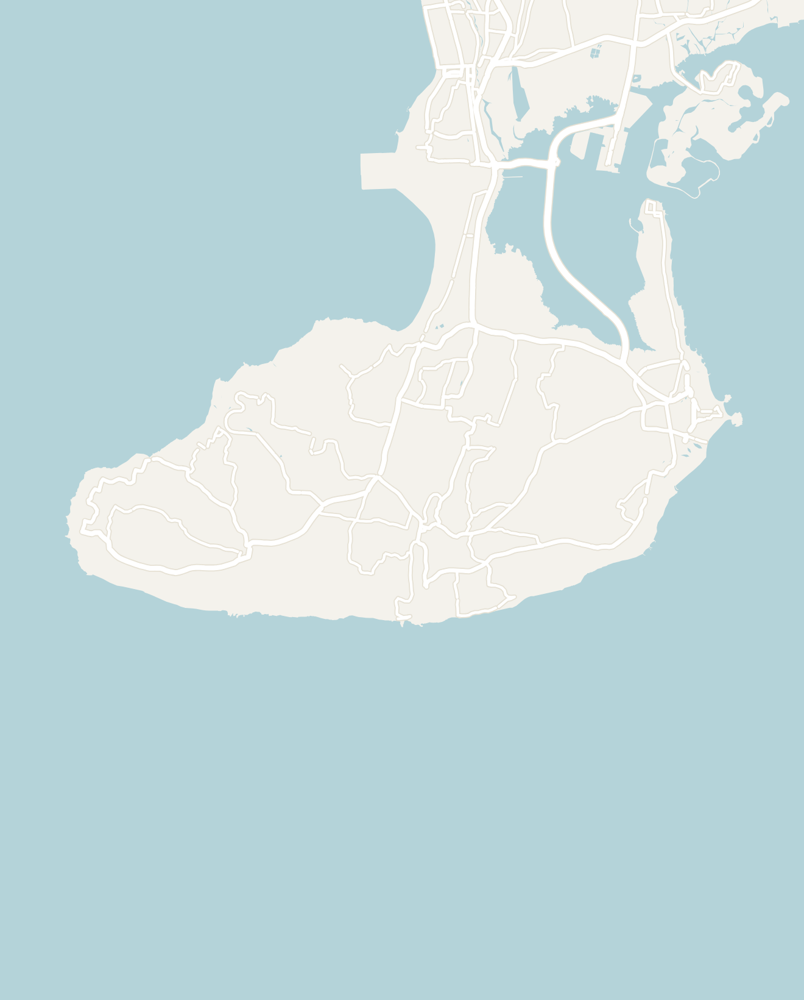

General
Indonesia is a country of over 17,000 islands. However, for most first trips (including mine) it means visiting Bali. Bali alone packs in beach clubs, rice terraces, cliff temples, world-class surf and some of the best value travel anywhere.
It's easy, cheap and photogenic, with a distinct Hindu culture that sets it apart from the rest of Muslim-majority Indonesia. I found Bali to be very touristy which has it's upsides like tourism infrastructure, but be prepared to deal with large crowds at popular sights. I would recommend spending a 7 to 10 days in Bali and add on extra days to explore the nearby Nusa Penida or Gili islands.
These notes cover Bali by zone: the beach-club west (Canggu & Seminyak), cultural Ubud, the clifftop south around Uluwatu, and the quiet, temple-dotted north.
- Getting around
- Grab — Southeast Asia's version of Uber works for both cars and scooter taxis. If you're looking for a thrill, hop on the back of a GrabBike (scooter taxi). It is faster, dirt cheap (~$1.80 for 20 min) and a fun way to cut through the traffic. You can also call a regular car and rides are also extremely affordable
- Private driver — for full-day trips around the island, I would recommend hiring a driver is very reasonable. It will run you ~$30–50 for the day for the entire car. They will handle all the logistics and may even give you recommendations on what to do
- Flights — fly into Denpasar International Airport (DPS) which is Bali's single airport in the south. Visa on Arrival (VoA) costs $35. It was a very smooth process here
- Money — the official currency is the Indonesian Rupiah. You'll be able to use credit card at most touristy spots. Carry cash for warungs (local eateries), drivers and temples. Overall, Bali is very affordable, with excellent food and activities that won't break the budget
- Food — Indonesian food is cheap and delicious. Try the Nasi Goreng (fried rice) and Mie Goreng (fried noodles). Other great dishes are the chicken satay, beef rendang and fresh grilled fish
- There are a ton of restaurants in Bali serving high quality international cuisine too! If you're in the more tourist-heavy areas of Canggu & Seminyak, you might actually have trouble finding Indonesian food
- On days where you're feeling lazy, you can order food on Grab and they'll bring it straight to your accommodation. Even with food delivery fees, prices are cheap
- Etiquette — dress modestly at temples. In general, everyone is expected to wear a sarong (waist wrap) given at temples and cover exposed shoulders. Some more sacred areas restrict entry for people with open wounds or menstruating women. Remember that Bali is deeply religious and it is important to respect local traditions
- When to go — the dry season (roughly April–October) is best. I went during wet season which I would not recommend due to the heavy downpours. However, the silver lining was smaller crowds
Canggu & Seminyak
1–2 days recommendedOn the Southwest coast of Bali lies Canggu and Seminyak. These two neighborhoods are home to Bali's beach clubs and are the most Westernized part of the island. I even had a hard time finding Indonesian food here (in Indonesia!). That said, it the best place on the island for nightlife and hip cafés. There are also some great sunset spots here as the sun sets in the West.
This area is the closest to the airport. I would recommend spending time here as your first day in Bali or if you want to spend time at the beach clubs.
- Beach Clubs - Bali has some of the world's best beach clubs. They have very aesthetic design & architecture and world-class DJs come to play in Bali. They're relatively chill during the day and come alive at night. Expect to pay premium prices at the more popular clubs
- Potato Head Beach Club — the iconic massive beach club, with a woven-basket facade and an infinity pool facing the ocean. I went here during the day and had a very chill day just lounging here and swimming in the pool. The food was amazing, but expect western prices. There's a table minimum (drinks & food included). It's the best beach club for sunset
- Finns Beach Club — a very popular beach club with two huge ocean-facing pools, a main stage and dance floor, and day beds throughout. Go in the evening for a proper night out
- Café-hopping — the area is full of high-design hipster cafés
- Foal Cafe (formerly Mr. Sista) - hipster western cafe with good brunch, healthy food and coffee here
- Mowies - a lowkey cafe with a pool (and a few digital nomads). The food and smoothies here were great
- Tanah Lot — located about an hour North of Seminyak, Tanah Lot is a temple perched on a rock just offshore. You can only cross to the temple at low tide across the black-sand beach at low tide. However, foreigners aren't allowed in so you can only admire it from the viewpoints. Bali has some stiff competition for temples so I'd say this is only worth it if you're already driving past


Double-tap to open in Google Maps
Ubud
2–3 days recommendedUbud is Bali's cultural and spiritual center, home to many temples, art markets, yoga and emerald rice terraces. Located roughly an hour and a half from Seminyak, it is a small town that lies in the lush green hills. The town of Ubud runs at a much a slower pace than the beach-club coast. However, there are still plenty of restaurants and places to stay here.
This was my favorite part of Bali as it had the most beautiful scenery and interesting temples to visit. I would recommend spending the majority of your time here since it has a very central location on the island, but you only need 2 to 3 days to explore the nearby sights.
- Sacred Monkey Forest Sanctuary — a lush, mystical rainforest where hundreds of monkeys roam free. The whole place feels like the set of Tomb Raider set with a river temple wrapped in enormous banyan vines and a mossy cremation temple of demon and skull statues in the back. Spend a half day to explore the complex
- Jatiluwih Rice Terraces — the iconic rice paddies just north of Ubud. Go early morning before the crowds and the heat to walk around and admire the rice paddies and watch the workers
- Ubud Palace & Market — the center of town, with traditional art, clothing and souvenir stalls and daily Balinese dance performances in the evening. Ubud Palace was extremely crowded when I was there
- Lekeleke Waterfall - a tall, narrow waterfall hidden in a small cliffside. You walk down 10 minutes into the jungle from the main entrance. It was not busy while we were there so we almost had it to ourselves
Southern Bali
1–2 days recommendedThe southern Bukit Peninsula of Bali is home to dramatic limestone headlands, world-class surf and the island's most famous temple. I visited with a private driver and it is best strung together as a loop if you're not staying in the area.
- Uluwatu Temple — a 10th-century temple perched on the edge of a sheer sea cliff. Walk along the walkway on top of the cliff and watch the sunset from the south viewpoint and stay for the Kecak fire dance performed in the outdoor amphitheater. This was my favorite temple in all of Bali The resident monkeys are aggressive and stole my water bottle.
- GWK Cultural Park — built in 2018, GWK Cultural Park is a huge, modern statue complex. It is famously home to a 32-story statue of Garuda Wisnu Kencana is visible from across the island. The rest of the park is filled with other statues and is worth spending at least a half day exploring
- Nusa Dua beach — a long beach with consistent surf. Stop at the blowhole and the little sea temple (Pura Bias Tugel) on the rocky peninsula just to the south
- Savaya (formerly Omnia) — the best club in all of Bali located on a cliffside near Uluwatu. The environment is immaculate with two enormous infinity pools, a large glowing cube overlooking the stage and a huge dance floor. The most famous DJs often play here including Calvin Harris, John Summit, Carl Cox and Peggy Gou play here. Come before sunset to catch the sun setting over the ocean.
- The table minimum is steep (~$200). Just buy cover entry if you're not in a larger group


Double-tap to open in Google Maps
North Bali
day trip from UbudThe North of Bali is far more untouched than the South of the Island. It is cooler, greener and home to many fantastic temples as well as waterfalls and crater lakes. It is best done as separate day trips from Ubud and the drive is very scenic through rice fields and small farms.
- Ulun Danu Beratan Temple — Bali's most recognizable temple, its tiered meru shrines appearing to float on the surface of Lake Beratan. It is one of the most aesthetic temples in Bali. The cheap (~$12) speedboat tour of the lake is fun, and the captain will usually let you drive
- Tirta Gangga Temple — a relaxing temple with a maze of manicured gardens, tiered fountains, ornate stone statues and koi ponds set against the backdrop of Mount Agung. The main draw is the stepping stone path across the water where dozens of giant golden koi swim beneath your feet. About 2 hours from Ubud and best combined with Lempuyang Temple (the famous Gates of Heaven) nearby. 50,000 IDR or $2.50 USD entry
- Penataran Agung Lempuyang Temple — the famous heaven gates photo you've seen on Instagram. The temple complex has been transformed into a bit of a Instagram factory. You are given a number and have to wait in line ~45 minutes for a picture. Spoiler: the reflection is actually a camera trick with a mirror! There isn't much to see in the area so I would only go if you're looking for the famous photo.
- Coffee Plantation Tour — Bali is famous for it's "cat poop" coffee. Famous as some of the most expensive coffee in the world, a strange creature called a civet eats coffee beans and then it is made into coffee. You'll be able to try some civet coffee, a variety of teas and they'll show you around the coffee plantation. It is a good stop as you'll probably drive past one on your way to the temples
- Wayan Restaurant — a restaurant on the far East side of the island, this was some of the best Indonesian food that I had in Bali
Other Places to Consider
I will definitely be back to Indonesia and I'm glad to explore more of the islands. There are over 17,000 islands. Here are some of the more popular ones recommended by friends:
- Islands nearby Bali
- The Nusa Islands — Nusa Penida and Nusa Lembongan, a short fast-boat from Bali, for the famous Kelingking "T-Rex" cliff, snorkeling with manta rays and quieter beaches
- The Gili Islands — three tiny car-free islands off Lombok (Gili T for the party, Air and Meno for calm), with turtles and great snorkeling
- Lombok — Bali's rawer neighbor, with the Mount Rinjani volcano trek and empty surf beaches in the south
- Komodo National Park — book a 3 to 4 night sail from Labuan Bajo on Flores to see Komodo dragons. You can also dive some of the best reefs in the world and hike Padar Island for the most iconic views in Indonesia. The park limits visitors to 1,000 per day so book in advance
- Borneo — one of the last places on earth where you can see wild orangutans. The main draw is a multi-day river cruise through Tanjung Puting National Park on a traditional wooden houseboat called a klotok
- Jakarta — one of the most populous city in the world with over 42 million people. Most travelers skip it, but highlights include Kota Tua (the Dutch colonial old town), the National Monument and the Istiqlal Mosque, the largest in Southeast Asia
- Yogyakarta & Java — the cultural heart of Java and the base for Borobudur (a 9th century Buddhist temple pyramid, best at sunrise), the towering Hindu temples of Prambanan and the volcanic sunrise views of Mount Bromo